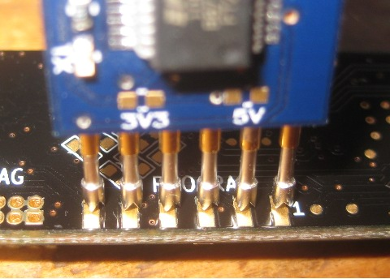

Programming¶
This page describes how to load compiled firmware onto an Ubertooth One. Other pages describe how to write firmware or host code for the platform.
There are three ways to program an Ubertooth board: the USB bootloader, the ISP bootloader, and JTAG.
USB bootloader¶
This is the recommended method of loading code onto an Ubertooth Zero or Ubertooth One provided that the USB bootloader is already installed (at the time of manufacture, for example). If you need to install the bootloader itself, you will have to use either ISP or JTAG.
The bootloader executes every time the device starts up from reset or power cycle. Normally it just gets out of the way and passes control to the application firmware very quickly. Alternatively it can enter Device Firmware Upgrade (DFU) mode which permits firmware upload and download over USB. There are two ways to tell the bootloader that you want it to enter DFU mode:
- soft bootloader entry: By setting a flag in RAM, the application firmware can instruct the bootloader to enter DFU mode following a reset (without loss of power). For example, with the bluetooth_rxtx firmware running you can trigger a reset into DFU mode using ‘ubertooth-util -f’ (located in host/bluetooth_rxtx/). Soft entry only works on Ubertooth One, not Ubertooth Zero.
- hard bootloader entry (also known as pin entry): By connecting two pins (for Ubertooth Zero it’s pin 1 and 3) on the expansion header with a jumper during reset (either soft or hard boot), you can force the bootloader into DFU mode. When using pin entry, the bootloader will enter DFU mode for only a few seconds and will then execute the application if no DFU activity has started during that period. This allows developers to permanently or semi-permanently jumper the pins providing a DFU opportunity on every reset. This method works on Ubertooth One but not Ubertooth Zero.
The bootloader indicates DFU mode by flashing the LEDs in a distinctive pattern. It also identifies itself as “usb_bootloader” on USB.
During DFU mode, firmware may be uploaded or downloaded using ubertooth-dfu. See host/usb_dfu/README for usage instructions.
It is possible that soft bootloader entry may be broken by installing a faulty application or an application that does not provide a method of triggering soft entry. In this case, pin entry must be used (e.g. by holding a paper clip in the expansion header while plugging in the device) to “unbrick” the unit.
For Ubertooth One, the pins to connect are pins 1 and 3 of the expansion header (P4). For Ubertooth Zero, the pins to connect are pins 1 and 13 of the expansion header (J1).
ISP bootloader¶
The LPC175x features an In-System Programming (ISP) bootloader that allows code to be loaded over a serial interface. In order to use ISP, you will need lpc21isp and a 3.3V serial programming device such as one of the following:
Pogoprog¶
The official Ubertooth ISP programmer is Pogoprog, an open source board that can be assembled using a process similar to Ubertooth One assembly.
An FTDI Basic Breakout - 3.3V¶
You can use SparkFun’s FTDI Basic Breakout - 3.3V to program an Ubertooth. Adafruit’s FTDI Friend is a similar board that should work as well. To allow lpc21isp to automatically activate the LPC175x’s ISP bootloader, you must modify the board in one of two ways.
Method one: the easy way¶
Just short the CTS pin to GND. This will force the microcontroller into ISP mode every time it resets while the programmer is connected. In order to perform a normal reset to run the newly loaded code, you will have to first disconnect the programmer.
Method two: the better way¶
Connect the CTS pin to the RTS pin (pin 3) on the FT232RL using fine gauge wire such as wire wrap wire. This is trickier to solder, but it has the advantage that the pin will be fully controlled by lpc21isp. This means that you can leave the programmer connected to the Ubertooth board throughout multiple program/test cycles.
Using ISP¶
Warning: Code loaded via ISP will blow away the bootloader. It is generally recommended to use this method only for installing the bootloader itself.
Connect your serial programmer to the Ubertooth board and type “make program” in the firmware source code directory. If you have a precompiled binary in .hex format, you can invoke lpc21isp directly with “lpc21isp -control firmware.hex /dev/ttyUSB0 230400 4000” (replacing firmware.hex with the firmware filename and /dev/ttyUSB0 with the device file of your serial programmer.
JTAG¶
Warning: Code loaded via JTAG will blow away the bootloader. It is generally recommended to use this method only for installing the bootloader itself.
Connect your ARM Cortex-M3 JTAG debugger (such as one supported by OpenOCD) to the standard Cortex Debug Connector on the Ubertooth One or the non-standard JTAG connector on the Ubertooth Zero. You know what to do.